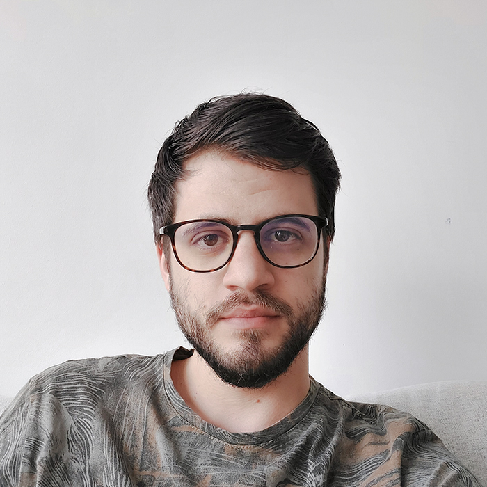

-
Kovács Patrik
- Hobbim: Falmászás, PC játékok, filmek és sorozatok
- Miért jelentkeztem a frontendre? Érdekel a programozás és tetszik, hogy a munkafolyamat vizuálisan nyomon követhető
- Legnagyobb cél: Anyagi jólét és család
- Ami tetszik a programozásban: Szeretem a logikus dolgokat és problémákat megoldani.
- Legjobb tulajdonság: Előbb-utóbb tanulok a hibáimból
Patrik vagyok, 27 éves és jelenleg építészeti látványtervezéssel foglalkozok. Békés megyei vagyok, 2013-ban költöztem fel Pestre amikor elkezdtem az építész tervezői szakot az Ybl-ön. Az egyetem alatt kezdtem el 3D-vel foglalkozni és miután lediplomáztam 2019-ben, egyből látványtervezőként kezdtem el dolgozni. 3 év után úgy éreztem, itt az ideje váltani. Mindig is érdekelt az IT világa, most viszont úgy döntöttem, bele is kóstolok. Márciusban kiköltöztünk a párommal Nagykovácsiba, úgyhogy most több szempontból is egy új korszak elé nézek.